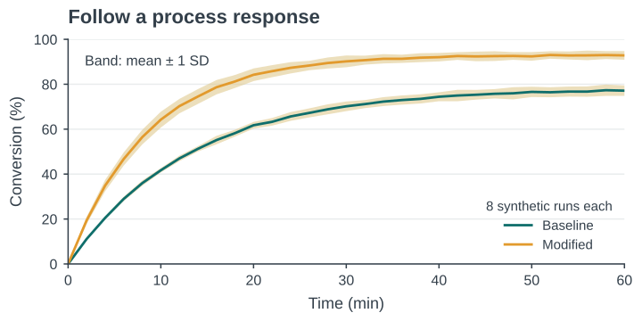
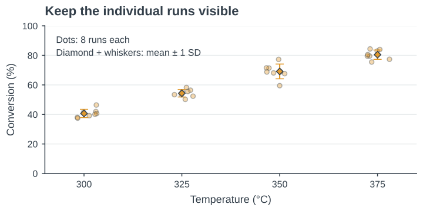
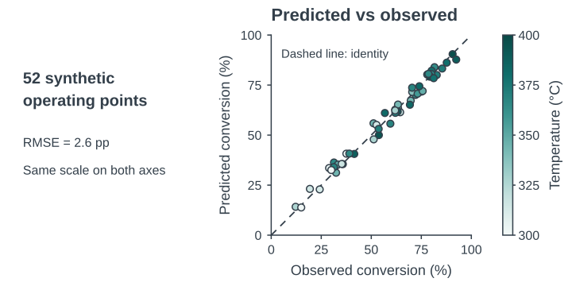
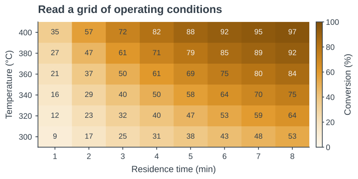
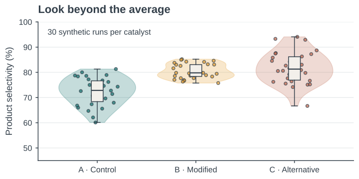
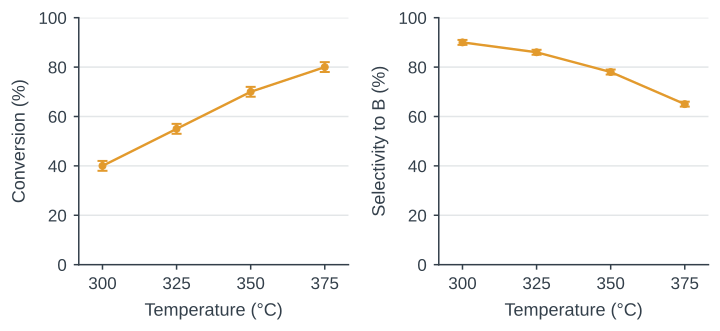

Week 9 · 2105620 · Python for first-time users · 09:00–12:00
15 October 2026
Today’s routine: predict a change, run the cell, check the result.

Synthetic runs: lines are means; sand bands show ±1 sample SD, n = 8 per condition.

Synthetic data: eight runs per temperature; diamonds and whiskers show mean ±1 SD. Horizontal jitter separates points.

Synthetic example: 52 operating points. Equal axes and the identity line show agreement; color encodes temperature. RMSE is reported in percentage points (pp).

Synthetic model: 48 operating settings. Numbers and color show conversion on the same 0–100% scale.
The same assumed model on a finer grid. Smooth contours are model predictions, not extra measurements.

Synthetic data: 30 runs per group. Dots show runs, boxes show median and IQR, and violin width shows a smoothed density.
Code cell 1: setup. Code cell 2: variables and lists.
week09_starter.ipynb in the prepared Jupyter environment.skh_palette.py beside the notebook.If setup is still blocked at 09:15: work with a partner and use the instructor’s running notebook.
Expected output: 300 40
Change temperature_C to 325. Predict, run, then check.
The names record our intended units. Python stores the numbers.
Expected output: 4 4
Pair by position: 300 °C with 40%, then 325 °C with 55%.
Code cell 2: each x value needs a matching y value.
fig: the whole figure. ax: one plotting area.
plot(...) draws data. Named arguments set its appearance.
After code cells 1–2: try marker="s". Check what changes.
| Message | First check |
|---|---|
NameError |
Correct spelling? Definition cell already run? |
FileNotFoundError |
CSV beside notebook? Exact filename? |
KeyError |
Column name matches df.columns? |
SyntaxError |
Quotes, commas and brackets complete? |
Read the last error line, then the line it points to.
Code cell 3: setup already imports pandas as pd.
Check: 12 rows, 4 temperatures, 3 independent runs each.
| temperature_C | run | conversion_pct | selectivity_pct |
|---|---|---|---|
| 300 | 1 | 38 | 91 |
| 300 | 2 | 40 | 90 |
| 300 | 3 | 42 | 89 |
One row = one independent simulated run at fixed residence time, 2.0 s.
First 3 of 12 rows. Conversion and selectivity in the same row belong to the same run.
Code cell 4: brackets select a column. Each point is one run.
Try s=64. Marker area changes. The data stay fixed.
In code cell 4, keep these lines before plt.show().
Run the whole cell again. Check quantity, unit and tick positions.
If the plot fails, read the first failing cell with your partner.
15 minutes
Resume at 10:30
Code cell 5, at 300 °C: X = 40 ± 2%, S = 90 ± 1% (mean ± SD).
Three runs per temperature. Sample SD uses n − 1.
Four means and four SDs in the same temperature order.
yerr gives nonnegative distances from each mean. At 300 °C: 38–42%.
A reader should understand the figure without opening the code.
Code cell 6: one figure, two plotting areas.
Each panel needs its own response label and matching SD column.
A color change needs a reason the reader can understand.

Synthetic data at 2.0 s. Means ±1 sample SD, n = 3 per temperature. The CSV and this figure use the same runs.
30 min
If blocked: pair up, use the supplied plotting cell, and annotate what each line does.
10 min
Feedback example: “Add ‘±1 sample SD, n = 3’ to define the bars.”
Code cell 7: run just after the two-panel cell. fig must refer to it.
Open both saved files. Check labels and bars at the intended size.
If a cell fails, fix that first error before checking later cells.
4 min
yerr contains and which runs produced it.Evidence to keep: your notebook, exported figure and caption.
Gallery: six figures with runnable examples
Start with one example. Change a single element and check its effect.
Before you leave
Identify one point that is still unclear.
Name one change you will make in your writing or figure.
Complete the short anonymous feedback form.